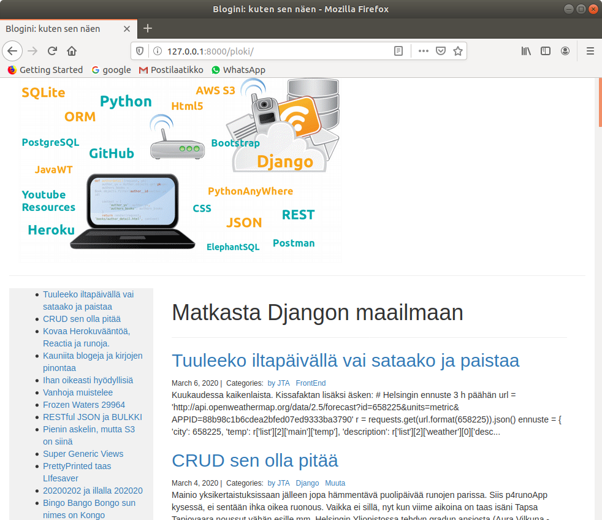
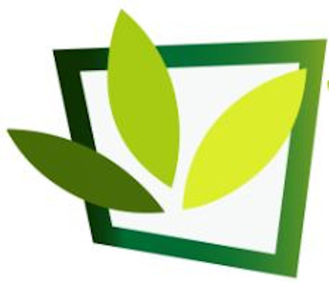
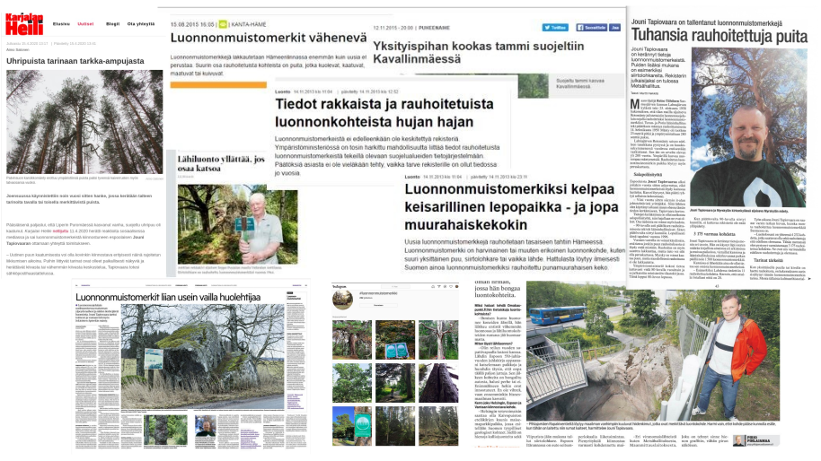
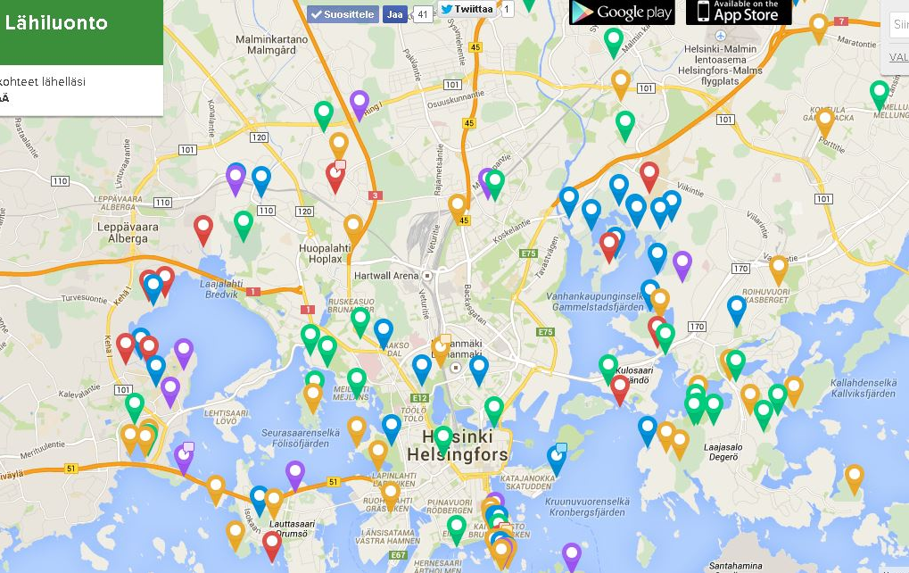

jtapiovaara.github.io
Seitsemän vuotta sitten tein riskipäätöksen seuratakseni omaa visiotani ja perustin yrityksen , jonka missiona oli arvokkaan kansallisperinnön - Suomen luonnonmuistomerkkien paikallistaminen, kokoaminen ja arkistointi tavoitteena mahdollistaa niiden hyödyntäminen ja arvon tunnustaminen sekä tänä päivänä että tulevia sukupolvia ajatellen. Työtä aloittaessani tieto oli hajanaista ja arkistoituna hyvin eri tavoin. Katson merkitykselliseksi saavutukseksi tiedon kokoamisen numeeriseksi kartta-aineistoksi siten, että se on nyt hyödynnettävissä esim. oppimateriaalina kouluissa. Tietojen käsittelyn ytimessä on ohjelmointityö Python/Django -ympäristössä. Olen ylläpitänyt ja kehittänyt numeerista luontokohteisiin liittyvää kartta-aineistoa seitsemän vuoden ajan aktiivisesti ja myös toimittanut tätä tietoa useaan kuntaan ja mm. Metsähallitukselle. Yksityisyrittäjänä olen tottunut toimimaan niin asiantuntijana kuin myyntimiehenä vastaten koko toimitusketjusta asioiden selvittämisestä, koodaamisesta, arkistoinnista ja asiakaspalvelusta lopputuotteen tuottamiseen asti. Uskon, että avoinna olevassa tehtävässä pystyisin hyödyntämään myös kykyäni toimia monimuotoisessa, muuttuvassa verkostossa yhteistyössä muiden kanssa. Aiemmin urallani olen toiminut lukuisissa tietotekniikan kehittämis- ja käyttöönottoprojekteissa ohjelmoijana, konsulttina ja myös hankevastaavan roolissa. EU:n Tulli- ja Veroliiton (TAXUD) tietotekniikan hanketoimiston projektipäällikkönä vastasin mm. suurten it-toimittajien dokumentaation arvioinnista ja tulevien hankkeiden laatusuunnitelmista. Minulla on kokemusta usean tahon hankkeiden yhteistyöstä.
Yrittäjävuodet olivat mahtavia, opettavaisia ja kiihkeitä
Otrakon





Seuraava, jäljellä oleva stintti on omistettu nörteille. Nyt mä koodaan. P1MyCVApp on Python sovellus, jossa esittelen joukon rakentamiani isoja ja pieniä sovelluksia. Se on tuotannossa Pythonanywhere.com pilvipalvelussa.
Työn alla olevaa:
Ylläpidän erään nuoren taiteilijan nettitaulukauppaa osoitteessa karoart.fi/taide.